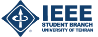

About Me
I am a senior B.Sc. student studying Electrical Engineering at the University of Tehran.
Currently, I am working as a Research Assistant at the Electrical Machine and Smart Micro-Grid laboratory, University of Tehran on "Wireless Network Infrastructure for MicroGrids", and as a teacher assistant of several bachelor courses at the School of ECE.
Generally, I am striving towards becoming a competent Power Electronic Engineer.
Experience
 Research Assistant - 2019-present
Research Assistant - 2019-present
Electrical Machines and Smart Micro-Grid Laboratory, University of Tehran
Implementation of a Wireless Network Infrastructure of Micro-grids and Meters
Supervisor: Dr. M. Abedini
 Research Intern - Summer 2020
Research Intern - Summer 2020
Electrical Machines and Smart Micro-Grid Laboratory, University of Tehran
Micro-Grid Wireless Network Management Software
Supervisor: Dr. M. Abedini
 Team Leader - 2017-present
Team Leader - 2017-present
Houshafza IoT Group, University of Tehran
Design and Implementation of an General-purpose Internet based Quadcopter
Education
 B.Sc., Electrical Engineering (2017-present)
B.Sc., Electrical Engineering (2017-present)
University of Tehran, Iran
GPA: 17.96/20 Equivalent to 3.87/4
 Diploma in Math and Physics (2013-2017)
Diploma in Math and Physics (2013-2017)
Shahid Beheshti High School,
National Organization for Development of Exceptional Talent
Andimeshk, Iran
GPA: 19.91/20 Equivalent to 4.0/4
Honors and Awards
 Eligible for Exemption from M.Sc Entrance Exam in University of Tehran as
an exceptionally talented student. Oct. 2020
Eligible for Exemption from M.Sc Entrance Exam in University of Tehran as
an exceptionally talented student. Oct. 2020
University of Tehran, Iran
Awarded Paid Internship offer by Max Planck Institute, Germany (Canceled due
to Covid-19 Pandemic). June 2020
Stuttgart, Germany
Supervisor: Dr. Katherine J. Kuchenbecker
Awarded Member of National Elites Foundation, Iran. 2017-2020
 Support Foundation of University of Tehran Grant. 2017-2020
Support Foundation of University of Tehran Grant. 2017-2020
For outstanding academic performance
Publications
Journal Papers
-
Smart Microgrid Educational Laboratory: An Integrated-Electric and Communications Infrastructures Platform
M. Abedini, T. Vahabzadeh, S. Ahmadi, M. Karimi, H. Manoochehri, A. Nazeri, M. Karami, M. Arani, F. Aminifar, M. Sanaye-Pasand
Scientia Iranica [In Press], July 2020
Skills
-
Simulation
MATLAB and SIMULINK, NI Multisim, PSPICE, Proteus, Altium Designer, ADS, HFSS -
Programming Languages
Highly skilled in Python, C, R. (GitHub page) -
FPGA
Verilog, Modelsim, Quartus, Nios II Processor -
Hardware
ARM/AVR Microcontrollers, Zigbee, Raspberry Pi, Arduino -
General
Windows and Linux(Ubuntu), LATEX
Notable Projects
MicroGrid Wireless Network Infrastructure
-
Implemented a network of PowerGrids connected to digital electricity meters, which transmit data of Micro-grids , based on Wireless Communication and Zigbee network
Microgrids as the local area power systems are changing the power system landscape due to their potential of offering a viable solution for integrating renewable energy resources into the main grid. From the operational point of view, microgrids should have the appropriate power electronic interfaces, control schemes, as well as monitoring and automation infrastructures to provide the required flexibility.
In this project we provide Monitoring, control, and automation in smart networks of Micro-Grids.


-
Wireless Infrastructure Network Management Software
this software provides Real-time monitoring and management of an implemented wireless network.
This Software is provided for the Implemented Wireless Network of PowerGrids explained upside.
Here, are some Screenshots of the software which indicate its features:
more detail on my GitHub page


Internet based Quadcopter
-
The most significant feature of this Quadcopter is that it is Controlled by a website over the Internet or via a mobile app, and
Provides Livestreaming, its location, etc. This project is implemented using,
- Raspberry Pie 3B (for computing and LTE communication),
- Ardino Nano (flight controller)
- Bluetooth module (alternative controller)
- GPS and humadity module, etc.
This drone is underdeveploed and it would be finished before the end of 2020.


Speech Alarm System for Preventing Noise Pollution of Vehicles in Silence Zones
-
This project is aimed to prevent noise pollution in silence zones (i.e hospitals, tunnels, avalanche areas). the designed system would let drivers know vocally wherever they reach silence zones in order to not use horns. Moreover, the system would allow to disable horns of cars automatically.
This system is based on Wireless Communication and RF modules with a frequency of 915 MHz.
followings are the designed and implemented Transmitter and Receiver
Selected Course Projects
-
Binary PAM Sensitivity to Sampling Time
Simulating binary PAM with raised-cosine pulse shape and obtaining BER plot for various sampling time errors. Written in MATLAB.
Course: Digital Communication Systems, University of Tehran -
My Shazam - Music Search Engine
Developing a Music Search Engine in MATLAB using Signal Processing Algorithms, Fourier Transform, Signal Spectrum, Digital Filters, etc. Written in MATLAB. Codes available on my GitHub page
Course: Signals and Systems, University of Tehran


-
Voice FIR-Filtering on FPGA
Used NIOS and Implemented PS2 mouse driver, voice recorder and FIR filtering, Programmed the system on the Altera DE2 board. Written in Verilog and C.
Course: FPGA-based Embedded System Design, University of Tehran -
Implementation of pipelined MIPS on Altera DE1 FPGA
MIPS is a reduced instruction set computer and this project was implemented using a given list of intruction sets and a general pipeline structure. It is written in Verilog, simulated in ModelSim and programmed on the FPGA with Quartus. Debugging was done using the SignalTap tool in Quartus. Uses on-board SRAM module. Codes available on my GitHub page
Course: Computer Architecture Lab, University of Tehran


{kind=link}
{kind=link}
{kind=link}
{kind=link}
{kind=link}
Also, other Projects are available on my GitHub page
Teaching Experiences
| Teaching Assistantship | |||||||||||
|
: Holding Extra-Curricular Classes
Fall 2020Spring 2020Fall 2019Spring 2019Fall 2019 |
|||||||||||
| Instructor | |||||||||||
Spring 2019Fall 2018 |
Certifications
CompTIA Certified Network+, by Kahkeshan Noor Inc, August 2019
Fundamental in MATLAB, by IEEE Student Branch, University of Tehran, Summmer 2017
 Teaching Assistant Training Workshop, by University of Tehran, Fall 2018
Teaching Assistant Training Workshop, by University of Tehran, Fall 2018